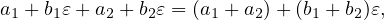

Figure 1: Definition of layers, neurons, weights, and biases in a neural network. The jth neuron
in the lth layer is referred to as neuron (l,j)
Artificial intelligence (AI) research has tried many different approaches since its founding. In the first decades of the 21st century, the AI research is dominated by highly mathematical optimization machine learning (ML), which has proved successful in solving many challenging real life problems.
Many problems in AI can be solved theoretically by searching through many possible solutions: Reasoning can be reduced to performing a search. Simple exhaustive searches are rarely sufficient for most real-world problems. The solution, for many problems, is to use ”heuristics” or ”rules of thumb” that prioritize choices in favor of those more likely to reach a goal. A very different kind of search came to prominence in the 1990s, based on the mathematical theory of optimization. Modern machine learning is based on these methods. Instead, of using detailed explanations to guide the search, it uses a combination of[1]: (a) general architectures; (b) trying trillions of possibilities, guided by simple ideas (like gradient descent) for improvement; and (c) the ability to recognize progress (by defining a objective function).
I am interested in applying machine learning to problems in computational physics problems that traditional numerical methods can not easily handle either because of its computational costs being too high or its traditional algorithms are too complicated to easily implement.
Enrico Fermi once criticized the complexity of a model (that contains many free parameters) by quoting Johnny von Neumann “With four parameters I can fit an elephant, and with five I can make him wiggle his trunk”. What Fermi implies is that it is easy to fit existing data and what is important is to have a model with predicting capability (fitting data not seen yet). The artificial neural network method tackles this difficulty by increasing the number of free parameters to millions, with the hope of obtaining predicting capability.
Neural networks consists of multiple layers of interconnected nodes (neurons), each having a weight for a connection, a bias, and an activation function. Each layer build upon the previous layer. This progression of computations through the network is called forward propagation. Another process called backpropagation uses algorithms which moves backwards through the layers to efficiently compute the partial derivatives of the objective function with respect to the weights and biases. Combining the forward and backward propagation, we can calculate errors in predictions and then adjusts the weights and biases using the gradient descent method. This process is called training/learning.
As is shown in Fig. 1, we use wjkl to denote the weight for the connection from the kth neuron in the (l − 1)th layer to the jth neuron in the lth layer. Use bjl to denote the bias of the jth neuron in the lth layer.
We use ajl to denote the output (activation) of the jth neuron in lth layer. A neural network model assumes that ajl is related to the al−1 (output of the previous layer) via
 | (1) |
where the summation is over all neurons in the (l − 1)th layer and σ is a function called activation function which can take various forms, e.g., step function,
|
| (2) |
rectified linear unit (ReLU),
 | (3) |
and sigmoid (“S”-shaped curve, also called logistic function)
 | (4) |
For natation ease, define zjl by
 | (5) |
which can be interpreted as an weighted input to the neuron (l,j), then Eq. (1) is written as
 | (6) |
In matrix form, Eq. (5) is written as
|
| (7) |
where wl is a J × K matrix, zl and bl are column vectors of length J, al−1 is a column vector of length K, where J and K are the number of neurons in the lth layer and (l − 1)th layer, respectively.
The input layer is where data inputs are provided, and the output layer is where the final prediction is made. The input and output layers of a deep neural network are called visible layers. The layers between the input layer and output layer are called hidden layers. Note that the input layer is usually not considered as a layer of the network since it does not involve any computation. In tensorflow, layers refer to the computing layers (i.e., hidden layers and the output layer, not including the input layer). The activation function of each layer can be different. The activation function of the output layer is often chosen as None, ReLU, logistic/tanh, and is usually different from those used in the hidden layers. Here “None” means activation σ(z) = z.
Define an objective function (can be called loss or cost function depending on contexts) by
 | (8) |
where w and b denotes the collection of all weights and biases in the network, n is the total number of training examples x, the summation is over all the training examples, y(x) is the desired output from the network (i.e., correct answer) when x is the input, and aL is the actual output from the output layer of the network and is a function of w,b, and x. Note that y and aL are vectors (with number of elements being the number of neurons in the output layer) and ∥…∥ denotes the vector norm. Explicitly writing out the vector norm, Eq. (8) is written as
|
| (9) |
where NL is the number of neurons in the output layer.
The cost function is the average error of the approximate solution away from the desired exact solution. The goal of a learning algorithm is to find weights and biases that minimize the cost function. A method of minimizing the cost function over (w,b) is the gradient descent method:
 | (10) |
|
| (11) |
where η is called learning rate, which should be positive.
In using the gradient descent method, we need to compute the partial derivatives ∂C∕∂wjkl and ∂C∕∂bjl. Next we will discuss how to compute them.
Note that the loss function involves an average over all the training examples. Denote the loss function for a specific training example by Cx, i.e.,
 | (12) |
then expression (9) is written as
 | (13) |
Then the partial derivatives ∂C∕∂wjkl and ∂C∕∂bjl can be written as the sum of ∂Cx∕∂wjkl and ∂Cx∕∂bjl, i.e.,
|
| (14) |
|
| (15) |
The above formulas indicate that, once ∂Cx∕∂wjkl and ∂Cx∕∂bjl are known, obtaining ∂C∕∂wjkl and ∂C∕∂bjl is trivial, i.e., just averaging them. Therefore, we will focus on Cx (i.e., the cost function for a fixed training example) and discuss how to compute ∂Cx∕∂wjkl and ∂Cx∕∂bjl.
In practice, we do not sum over all the training examples. Instead, we average the derivative over a small number (say 16) of training examples (a mini batch) and use these approximate derivatives to advance a step. For the next step, we stochastically change to using a different mini batch. This is called stochastic gradient descent (SGD) method.
The cost function Cx is a function of weights and biases of all neurons (the input x and output y(x) are fixed parameters). For a specific neuron (l,j), its weights and biases enter Cx via the combination zjl = ∑ kwjklakl−1 + bjl. Then it is useful to define the following partial derivative:
 | (16) |
where the partial derivative are taken with fixed weights and biases for all neurons except neuron (l,j). Note that the akl−1 appearing in the expression of zjl does not depend on wjkl or bjl. It only depends on the weights and biases in the layers ≤ (l − 1), which are all fixed when taking the derivative in expression (16). δjl defined in expression (16) is often called the error of neuron (l,j).
Using the chain rule, ∂Cx∕∂wjkl and ∂Cx∕∂bjl can be expressed in terms of δjl:
 | (17) |
and
|
| (18) |
Therefore, if δjl is known, it is trivial to compute the gradients needed in the gradient descent method.

For the output layer (Lth layer), δjl defined in Eq. (16) is written as
|
| (19) |
The dependence of Cx on ajL is explicitly given by Eq. (12), from which the above expression for δjL is written as
 | (20) |
Therefore δjL is easy to compute.
Backpropagation is a way of computing δjl for every layer using recurrence relations: the relation between δl and δl+1. Noting how the error is propagating through the network, we know the following identity:
|
| (21) |
with
|
| (22) |
i.e.,
|
| (23) |
Therefore
|
| (24) |
i.e.,
|
| (25) |
Equation (25) gives the recurrence relations of computing δl from δl+1. This is called the backpropagation algorithm. Eq. (25) can be written in the matrix form:
|
| (26) |
where T stands for matrix transpose, ⊙ is the element-wise product.
In the least square method, the loss function is defined as
|
| (27) |
where (xi) is the output of the model for the input xi, n is the number of data points.
In the most general case, each data point considers of multiple independent variables and multiple dependent variables (x,y). In simple cases, each data point has one independent variable and one dependent variable. For example, a data set consists of n data-points (xi,yi), i = 1, …, n, where xi is an independent variable and yi is a dependent variable whose value is found by observation. The model function has the form y(x) = f(x,β), where m adjustable parameters are held in the vector β. A least squar model is called linear if the model comprises a linear combination of the parameters, i.e.,
|
| (28) |
where φj(x) are basis functions chosen. Letting Xij = φj(xi), then the model prediction for input xi can be written as
|
| (29) |
For n data points, the above can be written in matrix form:
|
| (30) |
where f = (f1,…fn)T.
For linear least-square fitting, we can solve the “normal equation” to get the fitting coefficients. Alternatively, one can use iterative methods, e.g., the gradient descent method, to minimize the mean square error over the coefficients. The following is a complete example in Python:
Hypothesis function (the model): Denote the output of the model by ŷ, which is given by
|
| (31) |
where z = w ⋅ x + b and σ is the sigmoid function given by Eq. (4). The model is nonlinear in the unknowns w and b.
The loss function is chosen as
|
| (32) |
where yi is the correct answer of the ith training example (yi can take only two values, 0 or 1). The value of is interpreted as the probability of y being 1.
Because the model function is nonlinear and the loss function is complicated, there is usually no closed-form solution that minimizes the loss function. Iterative methods, such as gradient descent, are needed to solve for w and b. The partial derivatives needed in the gradient desent method can be written as
![[ ]
∂L- = −-1 ∑ y 1σ′(z)x − (1 − y)--1---σ′(z)x
∂w m i iˆyi i i (1− ˆyi) i
1 ∑ {[ 1 1 ] }
= −-- yi--− (1− yi)-------σ ′(z)xi
m i {[ ˆyi ] (1 −}ˆyi)
-1 ∑ --yi −y^i ′
= −m ˆyi(1− ˆyi) σ (z)xi
∑i {[ ] }
= −-1 --yi −y^i σ(1− σ)xi
m i ˆyi(1− ˆyi)
1 ∑ {[ yi −y^i ] }
= −m- ˆy-(1−-ˆy-) ˆyi(1− yˆi)xi
i i i
= −-1 ∑ [(yi − ^yi)xi] (33)
m i](machine_learning34x.png)
|
| (34) |
The above formula is simplified as
|
| (35) |
Similary, we obtain
|
| (36) |
Forward:
* Class
* Operator overloading
* Subclass, inheritance
* Polymorphism
* Recursion
The following is the backword (or reverse) method. This code is a little harder to understand than the the forward method.
[1] Michael A Nielsen. Neural networks and deep learning, volume 25. Determination Press: http://neuralnetworksanddeeplearning.com/, 2015.